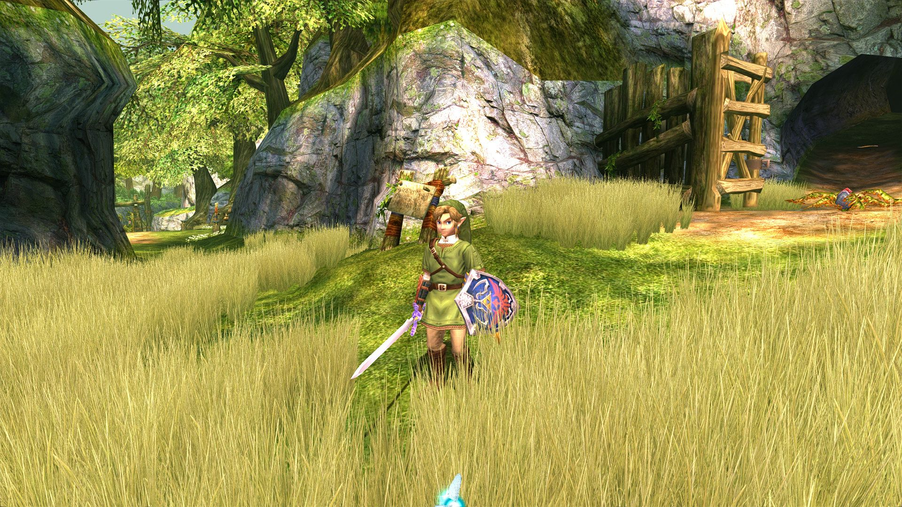
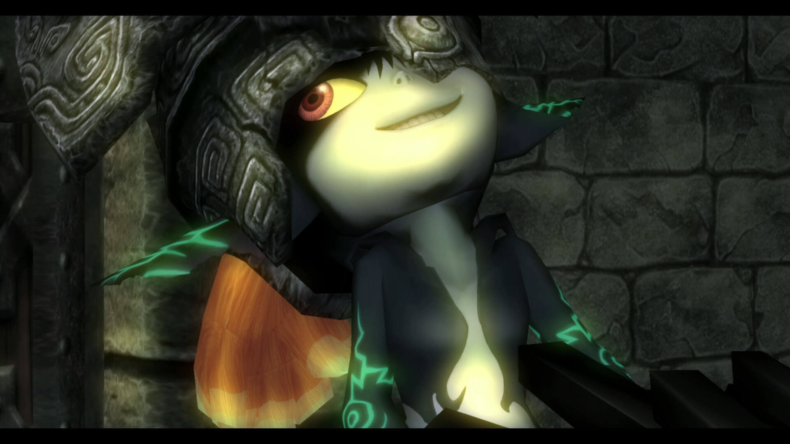
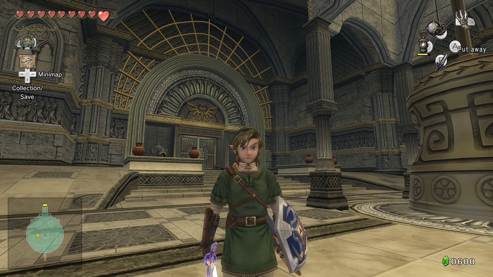

The Legend of Zelda: Twilight Princess est un jeu vidéo d'action-aventure développé par Nintendo EAD et édité par Nintendo sorti sur GameCube et Wii. Il s’agit du treizième opus de la série The Legend of Zelda.
Initialement annoncée pour novembre 2005, sa sortie a été repoussée à fin 2006 pour permettre aux développeurs de changer une très grande partie du monde du jeu, et accessoirement d'y ajouter la compatibilité avec la Wii.
Shigeru Miyamoto (créateur de la série The Legend of Zelda) et Eiji Aonuma ont misé sur des graphismes plus réalistes, contrairement au cel-shading que The Legend of Zelda: The Wind Waker utilise.
Le jeu s'est vendu à 1,59 million d'exemplaires sur GameCube1 et à 6,92 millions d'exemplaires sur Wii2.
Une version en haute définition est sortie le 4 mars 2016 sur Wii U.
Link est au début un jeune fermier de Toal qui vit avec ses quatre amis et sa meilleure amie: Iria. Malheureusement, elle se fait capturer, ainsi que les autres par des monstres montés sur des sangliers. À la recherche de ses amis, Link aperçoit un mur noir inquiétant et se fait emporter au Royaume du Crépuscule. Un agent du crépuscule essaie de l'éliminer, mais la Triforce du courage l'en empêche et transforme notre héros en loup. Plus tard, au château d'Hyrule, là où il s'est fait emprisonner, Link rencontre Midona, qui le libère, puis la princesse Zelda qui lui apprend que ce monde est en fait leur monde conquis par le Xanto, le roi des Ombre. Pour libérer sa région du règne du Crépuscule, il doit retrouver des perles de lumière, dispersées dans tout le territoire. Il en fera de même avec toutes les régions d'Hyrule. Après avoir accompli cette tache, l'Esprit gardien de la lumière de ladite région lui redonnera sa forme humaine.
Midona l’entraîne en quête des cristaux d'Ombre, censés détenir le pouvoir de ses ancêtres. Il ira dans le temple Sylvestre située dans la forêt de Firone, escaladera la Montagne de la Mort où se trouvent les mines Gorons et explorera le temple abyssal du lac Hylia. Après ce dernier donjon, il tombe nez-à-nez avec Xanto, le faux roi du royaume du Crépuscule et l'ennemi de Midona, qui réveille la malédiction de Link (ce qui le change à nouveau en loup), prend les cristaux d'ombre et expose Midona à la lumière de l'esprit Lanelle, ce qui l'affaiblit gravement. Link emmène donc Midona auprès de la princesse Zelda, qui offre son énergie vitale en sacrifice pour la sauver. Pour lever sa malédiction, Link part dans la forêt de Firone, au fond de laquelle il trouve un sanctuaire dans lequel il trouve l'épée de légende, qui lui rend sa forme humaine. Midona récupère le fragment de magie qui empoisonnait Link, lui permettant de se changer en loup à volonté.
Midona entraîne ensuite Link dans le désert Gerudo. Là, il y découvre les vestiges de la tour du Jugement, où il apprend que Xanto est le sous-fifre du Seigneur Ganondorf. Link apprend qu'il existe un point de connexion entre les deux mondes dans ce temple. Mais le miroir des Ombres, qui sert de « pont » est brisé, et Link doit retrouver les fragments du miroir « dans les montagne enneigées, le passé, et les cieux ».
Il s'aventure sur la montagne du yéti, qu'il suit au snowboard, et aide à soigner sa femme, qui est devenue un monstre après s'être contemplée dans le deuxième fragment du miroir. Dans le sanctuaire de la forêt, il découvre la porte du temps, qui l'emmène au temple du temps, où se trouve le troisième fragment de miroir et un mystérieux bâton, censé pouvoir ramener Baba (amie que Link rencontre et qui le téléporte à l'entrée du donjon) auprès de son peuple. Suit une période où notre héros aide Iria, qu'il a retrouvée amnésique à Cocorico, à retrouver la mémoire. Enfin, dans le sous-sol de l'église de Cocorico, il découvre un ancien canon qui, réparé, l'emmène à Célestia, patrie de Baba qui se trouve au-dessus des nuages, où il trouve le troisième fragment de miroir.
Link retourne donc au sommet de la tour du Jugement où il reconstitue le miroir et où les Sages ayant enfermé Ganondorf dans le Crépuscule dévoilent que Midona n'est autre que la princesse du Crépuscule, maudite par Xanto. Link ouvre ensuite le passage vers le monde des Ombres, traverse le Palais du Crépuscule et rencontre Xanto, qui fait un bref discours sur les raisons de son usurpation avant d'engager le combat avec Link, qui triomphe et récupère donc les cristaux d'ombres.
Link se prépare ensuite à affronter Ganondorf, qui a pris le contrôle du château d'Hyrule et qui a kidnappé Zelda. Link affronte tout d'abord cette dernière, possédée par Ganondorf, puis celui-ci sous la forme de la créature Ganon, puis à cheval avec l'aide de Zelda, et enfin à l'épée. Après avoir triomphé de ce dernier combat, Link aperçoit la silhouette d'une jeune fille titubante au loin, qui n'est autre que Midona ayant reprise son apparence de princesse du Crépuscule.
La scène qui suit le générique de fin montre Link, Zelda et Midona au sommet de la Tour de Jugement, s'échangeant quelques mots d'adieux à la suite desquels Midona repart dans son royaume et détruit définitivement le miroir des Ombres, afin de couper tout lien entre le monde de la Lumière et celui des Ombres.
WIKIPEDIA. The Legend of Zelda : Twilight Princess
https://fr.wikipedia.org/wiki/The_Legend_of_Zelda:_Twilight_Princess